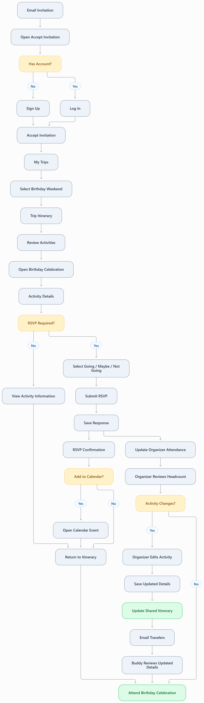

Birthday Buddy | Birthday Weekend Guest
1. Persona
Name and Background
Name: Buddy Delgado
Age: 34
Occupation: Elementary School Teacher
Role: Invited Traveler
Trip: Birthday Weekend in Austin
Group: Eight Friends
Buddy is a 34-year-old elementary school teacher who has been invited to celebrate a close friend's birthday during a weekend trip to Austin. He is friendly, organized, and enjoys spending time with his friends, but he is not responsible for planning the trip.
Buddy prefers having information available before committing to an activity. He wants to know when and where the group is meeting, what an activity costs, and whether he needs to arrange transportation or childcare. He appreciates having a schedule he can reference without repeatedly contacting the birthday organizer.
Although Buddy is comfortable using technology, he has limited time during the school day. He often checks invitations between classes and prefers websites that are easy to navigate on his phone. Once his account is created, he expects to find activity details and submit an RSVP in just a few taps.
2. Technology
Devices
- Primary: iPhone using Safari for invitations, schedules, and RSVPs.
- Secondary: School laptop, occasionally used for personal tasks.
Technology Proficiency
Buddy has high proficiency with smartphones and moderate to high proficiency with websites and online forms. He regularly uses email, messaging applications, social media, and his phone's calendar to organize personal commitments.
He is comfortable creating an account and navigating a website, but he becomes frustrated when the process involves unnecessary questions or multiple confusing screens. He prefers simple navigation, readable text, and clear buttons.
Loves
- Seeing the date, time, and location of an activity immediately.
- Submitting an RSVP with a few taps.
- Adding activities to his phone's calendar.
- Knowing the dress code, parking information, and what to bring.
- Having the entire birthday weekend schedule available in one place.
Hates
- Long registration forms with unnecessary questions.
- Websites that load slowly or are difficult to read on a phone.
- Searching through group chats for activity information.
- Having to text the organizer to ask basic logistical questions.
- Unexpected schedule changes that are not clearly communicated.
Frustrations and Needs
Buddy's biggest frustration is receiving invitations without enough information to make a decision. When activity details are scattered across emails and group messages, he has to search for the correct date, time, address, and cost before deciding whether he can attend.
Buddy also needs to plan around his responsibilities outside the birthday celebration. He may need to arrange childcare, coordinate transportation, or adjust other commitments. Accurate start and end times help him determine which activities fit his schedule.
He wants one mobile-friendly itinerary where he can view the weekend schedule, open an activity for details, submit an RSVP, and add the event to his calendar. He also wants access to the organizer's contact information if a question comes up.
3. Attitudes and Behaviors
Buddy enjoys celebrating important moments with his friends and is generally quick to respond to invitations. He likes knowing the plan ahead of time so he can organize his personal schedule and avoid last-minute conflicts. Although he is happy to participate, he prefers leaving the planning responsibilities to the organizer.
Buddy primarily uses his iPhone to access information. He checks email between classes and often skims a website before deciding whether to spend more time on it. He expects important information such as activity dates, times, locations, and costs to be clearly presented without unnecessary navigation.
When Buddy receives an invitation, he is willing to create an account if the process is straightforward and provides access to the entire birthday weekend itinerary. He understands that registration may take a few minutes, but expects future visits and RSVPs to be much faster.
During the birthday weekend, Buddy uses the shared itinerary to check upcoming activities, confirm locations, and review changes. He appreciates email notifications when activity details are updated because they reduce the need to monitor group chats or contact the host.
4. User Story
As a birthday weekend guest, I want to view the shared itinerary and RSVP to activities so I can plan my participation independently.
5. Use Case
Use Case Statement
As an invited birthday weekend guest, I need to access the trip itinerary, review activity details, and submit RSVPs so I can participate without repeatedly contacting the organizer.
Scenario
Buddy receives an email invitation to attend a friend's birthday weekend in Austin. The organizer has created a trip itinerary containing several activities, including the main birthday celebration.
Buddy opens the invitation on his iPhone and is directed to the trip-planning website. Because he does not have an account, he completes registration and accepts the invitation. The website adds him to the birthday trip as a Traveler.
Buddy opens the trip from My Trips and reviews the weekend itinerary. He selects the main birthday celebration to see its date, start and end times, location, estimated cost, dress code, parking information, and other event notes.
After reviewing the details, Buddy selects Going and submits his RSVP. The website saves his response, updates the organizer's attendance totals, and displays a confirmation with an Add to Calendar option and host contact information.
Buddy adds the activity to his calendar and returns to the itinerary whenever he needs to review the weekend schedule. If an activity changes, he receives an email notification directing him to the updated information.
Preconditions
- The birthday organizer has created a trip for the weekend celebration.
- The organizer has added the birthday celebration as an activity with a valid date, start time, end time, and location.
- Buddy has received an email invitation to the trip.
- Buddy has an iPhone, an email address, and an internet connection.
- Buddy has not yet accepted the invitation or submitted an RSVP.
Postconditions
- Buddy has created an account and accepted his trip invitation.
- The birthday weekend appears in Buddy's My Trips list.
- Buddy can view the shared trip itinerary and activity details.
- His Going RSVP is saved for the birthday celebration.
- The organizer's attendance summary includes Buddy's response.
- Buddy receives an RSVP confirmation with an Add to Calendar option and host contact information.
- Buddy can return to the itinerary to review updates and change his RSVP if needed.
6. Detailed User Interaction Flow
Buddy's interaction flow focuses on the guest experience within the shared eight-page trip planner. He receives an email invitation, creates an account, accepts the trip, reviews the itinerary, and RSVPs to an individual activity.
Receive and Open Invitation
Step 1: Receive Email Invitation
Buddy: Receives an email invitation from the birthday organizer while taking a break between classes.
The email identifies the birthday weekend trip and includes an invitation acceptance link.
Website: Has created a Pending invitation associated with Buddy's email address.
Step 2: Open Invitation
Buddy: Taps the invitation link on his iPhone.
Website: Opens Accept Invitation and displays the trip name, organizer, and an option to Sign Up or Log In.
The website checks whether Buddy is authenticated. Because he does not have an account, he selects Sign Up.
Create Account and Accept Invitation
Step 3: Complete Registration
Website: Displays the Sign Up form with the following fields:
- First Name
- Last Name
- Email Address
- Password
- Confirm Password
- Sign Up button
Buddy: Enters his information and selects Sign Up.
Website: Validates the required fields, email format, and password confirmation.
If the information is invalid, the website displays field-specific error messages.
If valid, the website creates Buddy's account and returns him to the invitation acceptance process.
Step 4: Accept Birthday Trip
Buddy: Reviews the birthday weekend invitation and selects Accept Invitation.
Website: Associates Buddy's account with the trip, assigns him the Traveler role, and changes his invitation status from Pending to Accepted.
The website provides access to the trip through My Trips.
Find the Birthday Weekend
Step 5: Open My Trips
Buddy: Opens My Trips after accepting the invitation.
Website: Displays trips Buddy organizes and trips he attends.
The birthday weekend appears under trips he is attending.
Step 6: Select Birthday Weekend
Buddy: Selects the birthday weekend trip.
Website: Opens the Trip Itinerary and displays the trip name, destination, dates, description, and scheduled activities.
Activities are displayed in chronological order with clear links to their individual details.
Because Buddy is a Traveler, he can view activities but cannot add, edit, or remove them.
Review Birthday Weekend Schedule
Step 7: Review Activities
Buddy: Scrolls through the weekend itinerary on his iPhone.
He reviews the scheduled activities and identifies the main birthday celebration.
Website: Displays activity names, dates, and times in a mobile-friendly layout.
Buddy can select any activity to view additional details.
Review Activity Details
Step 8: Open Birthday Celebration
Buddy: Selects the main birthday celebration.
Website: Opens Activity Details & RSVP and displays:
- Activity Name
- Activity Date
- Start Time
- End Time
- Location Name
- Location Address
- Description
- Estimated Cost
- Cost Notes
- Event Notes
- Reservation Information
- Host Contact Information
- RSVP Options, if enabled
Step 9: Review Important Information
Buddy: Reads the activity details to confirm the date, location, and start and end times.
He reviews the event notes for information about the party theme, dress code, parking, food, and whether guests should bring anything.
Website: Presents the information entered by the organizer in a readable, mobile-friendly format.
If Buddy needs additional clarification, the host contact information is available.
Submit Birthday Celebration RSVP
Step 10: Select RSVP
Website: Checks whether RSVP Required is enabled for the activity.
If RSVP is not required, Buddy can review the information without submitting a response.
If RSVP is required, the website displays:
- Going
- Maybe
- Not Going
- Submit RSVP button
Buddy: Selects Going because he plans to attend the birthday celebration.
Step 11: Submit RSVP
Buddy: Selects Submit RSVP.
Website: Saves Buddy's Going response for the selected activity.
The website updates the activity's attendance totals and displays an RSVP confirmation.
Buddy can return later to change his response to Maybe or Not Going.
Confirm and Save Activity
Step 12: Review RSVP Confirmation
Website: Displays a confirmation containing the activity name, date, time, location, and Buddy's Going response.
The confirmation also provides an Add to Calendar option and host contact information.
Buddy: Reviews the confirmation and selects Add to Calendar.
Step 13: Add Activity to Calendar
Website: Provides calendar event information containing the activity name, date, start and end times, and location.
Buddy: Opens the calendar option on his iPhone and confirms the event in his personal calendar.
Website: Keeps Buddy's RSVP saved independently of whether he adds the activity to his calendar.
Update Organizer Attendance
Step 14: Update Activity Headcount
Website: Includes Buddy's Going response in the organizer-only attendance summary within the Trip Itinerary.
The organizer can review the total number of travelers marked Going, Maybe, Not Going, or Not Responded.
Organizer: Uses the attendance information to coordinate the birthday celebration without contacting Buddy individually.
Review Schedule Changes
Step 15: Receive Activity Update
Organizer: Changes the birthday celebration start time and saves the updated activity.
Website: Updates the shared itinerary and sends an email notification to accepted adult travelers, including Buddy.
Buddy: Opens the email and follows the link to review the updated activity.
Website: Displays the latest activity date, time, location, and notes.
Final Outcome
Step 16: Attend Birthday Celebration
Buddy: Attends the birthday celebration knowing he can independently access the itinerary, review event details, and update his RSVP if necessary.
Website: Maintains Buddy's RSVP, provides current activity information, and keeps the organizer's attendance totals updated.
Buddy successfully accepts his invitation, reviews the birthday weekend itinerary, and submits his RSVP through one shared trip-planning website. He can access event details, save activities to his calendar, and receive updates without repeatedly contacting the organizer. The host benefits from accurate attendance information and fewer logistical questions.
Birthday Buddy User Flow Diagram
The diagram below illustrates Buddy's guest journey from email invitation through registration, itinerary review, RSVP confirmation, and activity updates.
